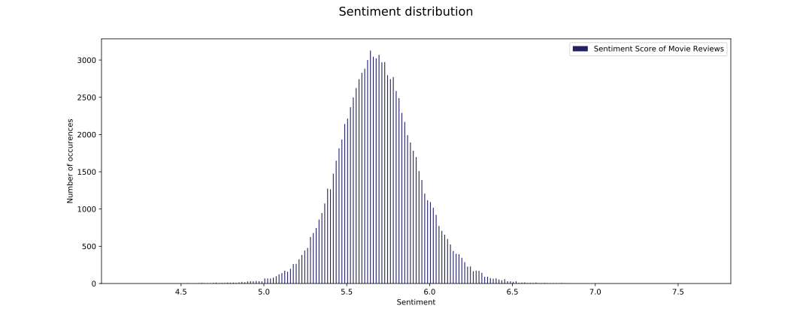

Final project 02805 Social Graphs and Interactions
Main | Data Stats | Graph | Sentiment | Communities | Ratings & Sentiments Graphs | Conclusion | NotebooksIn this section, we will study the sentiment of movie reviews. We will base our analysis on a naive sentiment algorithm and study the frequent words with the term frequency - inverse document frequency (TF-IDF).
Sentiment Distribution of Reviews
For this project the sentiment scores were calculated on all of the reviews. When the sentiment score is calculated for each review, it is possible to plot all of them in order to look at the sentiment distribution:  Based on the sentiment distribution it can be seen that the sentiment scores for these reviews are normally distributed. This means that the set of reviews used for this project has probably been selected, such that there are an equal amount of possitive and negative reviews. If the reviews were instead randomly selected from IMDB, there would be a possibility that the reviews would not be normally distributed, or at least not as perfekt as these.This is important consider when analysing the results of the sentiment analysis.
Frequent Words in Positive and Negative Reviews
Once the sentiment scores of all reviews are calculated, it is interesting to look at which words are often used in the possitive and the negative reviews.In order to look at words which are unique for possitive reviews and words unique for negative reviews it is relevant to calculate the TF-IDF of each word in the two types of reviews.
Word cloud for possitive reviews:
 Based on the word cloud for the possitive reviews it can be seen that alot of the words can be linked with Disney movies. This is because Disney movies themselves often contain alot of possitive aspects such as a charming prince, a beautiful kingdom etc.
This shows that there is some bias when doing a sentiment analysis on movie reviews, since describing a movie plot or aspects of the movie, might result in a negative review being categorized as a positive review and vice versa.
Based on the word cloud for the possitive reviews it can be seen that alot of the words can be linked with Disney movies. This is because Disney movies themselves often contain alot of possitive aspects such as a charming prince, a beautiful kingdom etc.
This shows that there is some bias when doing a sentiment analysis on movie reviews, since describing a movie plot or aspects of the movie, might result in a negative review being categorized as a positive review and vice versa.
Word cloud for negative reviews:
 In the same way as with the positive reviews it can be seen that movies and movie genres which tend to have a more negative atmosphere tend to be categorized as negative reviews, even though they might actually be good horror movies. This again shows that there is some bias when looking at the sentiment scores of movie reviews.
In the same way as with the positive reviews it can be seen that movies and movie genres which tend to have a more negative atmosphere tend to be categorized as negative reviews, even though they might actually be good horror movies. This again shows that there is some bias when looking at the sentiment scores of movie reviews.
Correlation with the IMDB Rating
It is interesting to compare the sentiment scores with the actual movie review scores on IMDB, in order to see if there is a correlation between the positive and negative words which are used in the reviews and the actual score they give the movies.Plots over Sentiment and IMDB rating:

 There are no clear dependency between IMDB ratings and sentiment scores.
There are no clear dependency between IMDB ratings and sentiment scores.